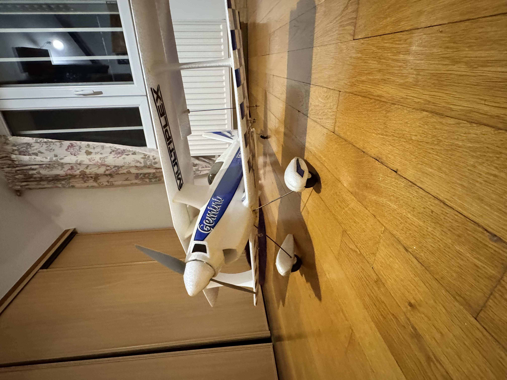
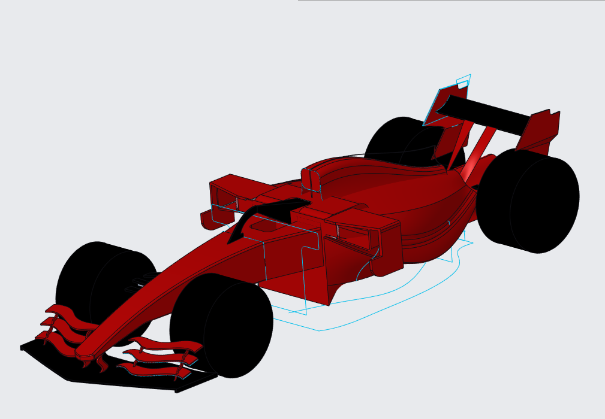
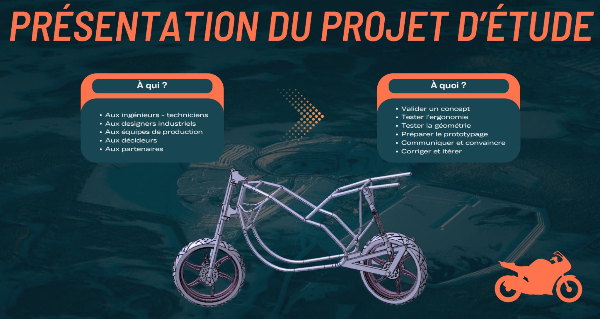
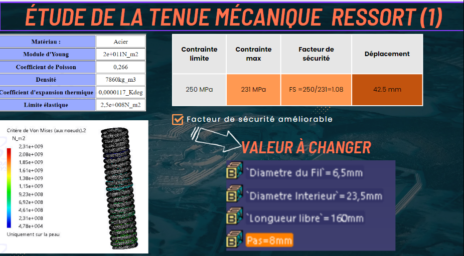

Étudiant en école d’ingénieur aéronautique — conception mécanique, modélisation CAO et projets techniques.
Projets
Projet personnel — Avion en modélisme (électronique fonctionnelle)
Projet persoAéronautiqueÉlectronique embarquéeIntégration
Réalisation d’un avion de modélisme avec une électronique entièrement fonctionnelle : intégration des éléments
embarqués, mise en service et tests. Ce projet m’a permis de développer des compétences concrètes en
intégration système, câblage/électronique, diagnostic et mise au point,
tout en gardant une approche rigoureuse (tests, itérations, fiabilité).
Compétences développées :
• Intégration et organisation des composants
• Câblage / gestion de l’alimentation / fiabilisation
• Tests, validation, dépannage et itération
• Autonomie, rigueur et gestion de projet personnel

Avion de modélisme : projet personnel avec électronique embarquée fonctionnelle, mise en service et tests.
Projets CAO — Creo Parametric
Formule 1 — modélisation CAO (Creo Parametric)
Creo ParametricSurfaciqueAssemblage
Modélisation d’une Formule 1 sous Creo Parametric : création des volumes principaux (carrosserie, ailerons,
roues) avec une attention portée à la cohérence géométrique et au rendu.

Formule 1 : modèle CAO réalisé sous Creo Parametric.
Projets CAO — CATIA V5 R19
Moto — CATIA V5 R19 + étude mécanique amortisseur
CATIA V5 R19ChâssisSuspensionAnalyse
Conception complète d’une moto sous CATIA V5 R19 avec assemblage et étude de la tenue mécanique
de l’amortisseur (ressort).

Moto — vue globale : présentation du projet de conception sous CATIA.

Étude mécanique : analyse de la tenue mécanique du ressort (contraintes, FS, déplacement).